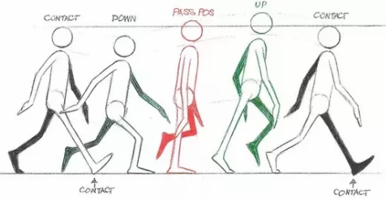
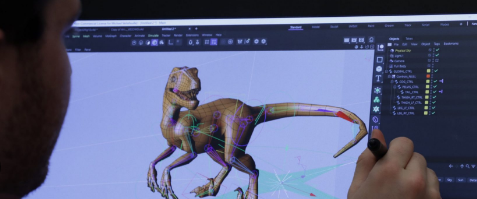
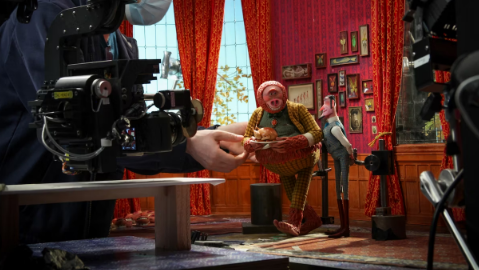
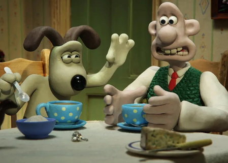

2D or Traditional Animation
Traditional animation, also known as 2D animation, involves creating each frame of the animation by hand. Animators draw individual frames on paper or digitally, with slight variations between frames to create the illusion of movement.
This technique has been used in classic animated films such as Disney's "Snow White and the Seven Dwarfs" and Warner Bros.' "Looney Tunes" series.

Other movies that utilize 2D animation:
Cinderella
The Emperor's New Groove
The Jungle Book
3D or Computer Animation
Computer animation, or 3D animation, involves creating animated scenes and characters using computer software. Animators manipulate digital models within a virtual environment, defining their movements, appearances, and interactions.
This type of animation is commonly used in feature films, television shows, video games, and advertisements. Examples include Pixar's "Toy Story" and DreamWorks' "Shrek."

Other movies that utilize 3D animation:
Disney Remakes
Megamind
Kung Fu Panda
Stop Motion Animation
Stop motion animation involves capturing a series of frames with physical objects, puppets, or models, and then adjusting their positions slightly between each frame to create the illusion of movement.
This technique can be time-consuming but offers a unique visual aesthetic. Examples include "Wallace and Gromit," "The Nightmare Before Christmas," and "Chicken Run."

Other movies that utilize stop motion animation:
Coraline
Paranorman
Fantastic Mr. Fox
Claymation Animation
Claymation is a form of stop motion animation that specifically involves using clay or plasticine models to create characters and scenes. Animators sculpt and mold the clay figures, photographing them frame by frame to create movement.
Notable examples of claymation include the works of Aardman Animations, such as "Wallace and Gromit" and "Shaun the Sheep."

Other movies that utilize claymation animation:
Santa Claus Is Comin' to Town
The Year Without a Santa Claus
Rudolph the Red-Nosed Reindeer
Cutout Animation
Cutout animation involves animating characters and objects made from cut-out pieces of paper, cardboard, or other flat materials. Animators create articulated puppets or figures with movable joints, photographing them frame by frame to create movement.
"South Park" and "Blue's Clues" are examples of popular animated shows that utilize cutout animation techniques.